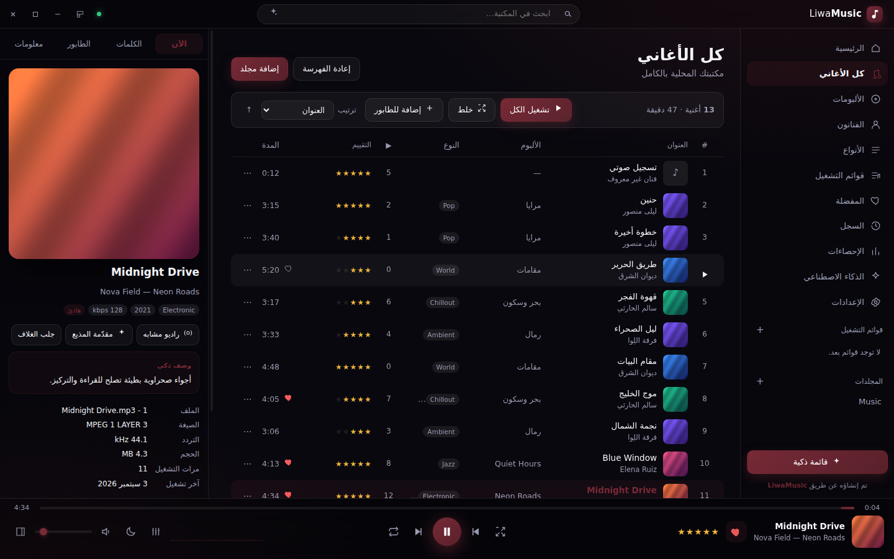
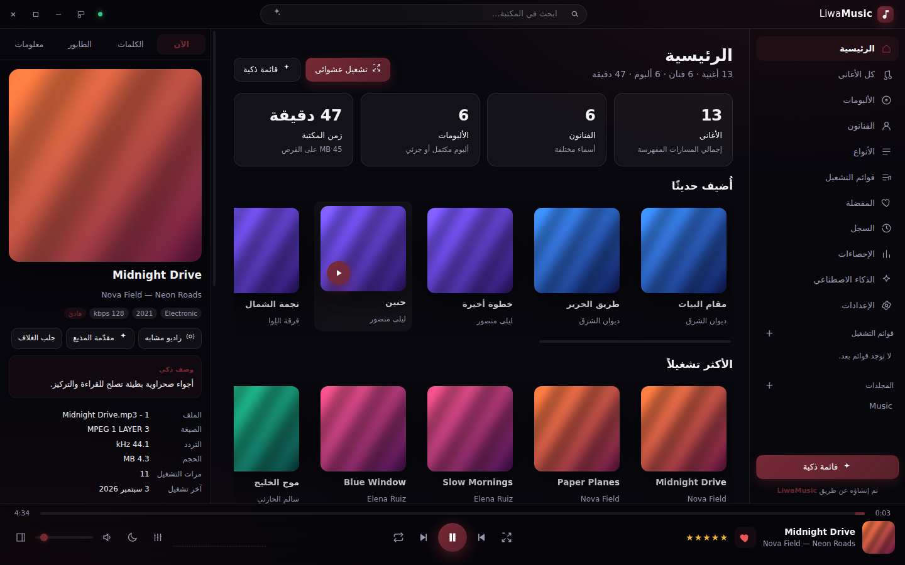
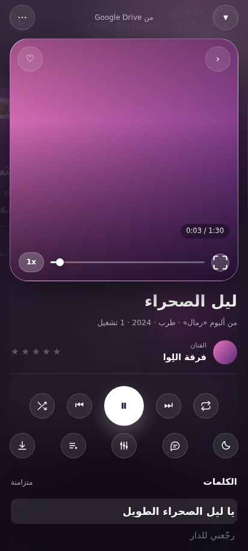
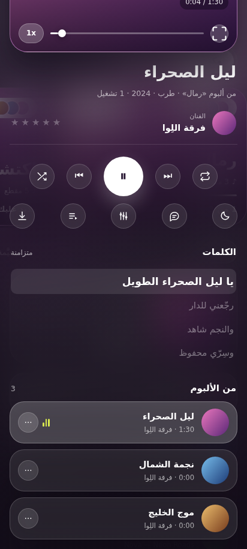
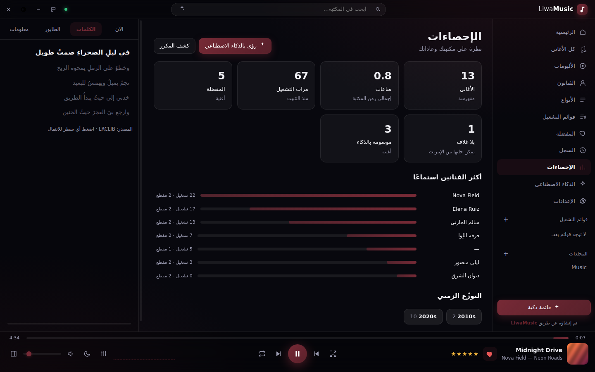
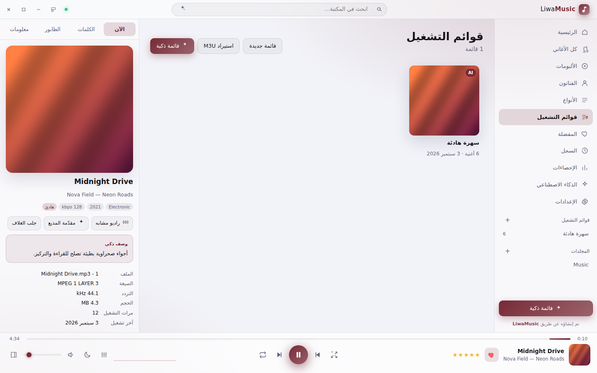
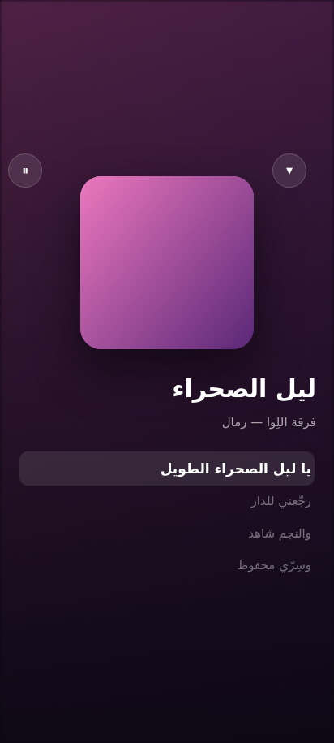
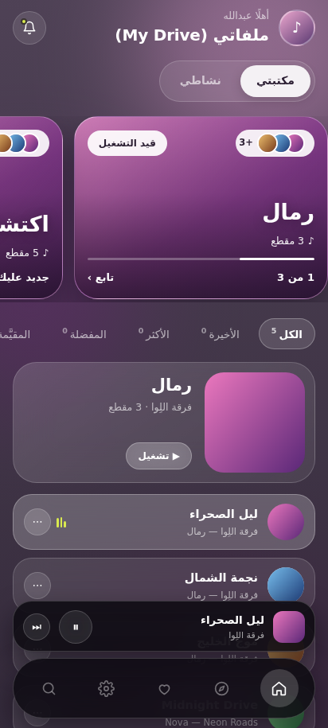

شغّل من Google Drive بلا تنزيل.
يبثّ الأغنية مباشرة مع تنقّل داخلها، ويقرأ الوسوم والغلاف بتنزيل 512 كيلوبايت فقط من كل ملف. ما تعدّله على جهاز يظهر على الآخر.

ارفع مجلد أغانيك فيُفهرسه LiwaMusic ويشغّله بمحرّك صوتي كامل. أغلفة وكلمات متزامنة من الإنترنت، ومزامنة تقييماتك وقوائمك بين ويندوز وهاتفك عبر Google Drive. مجاني ومفتوح المصدر، بلا حساب وبلا خادم.


فهرسة ذكية، بثّ من درايف، كلمات متزامنة، ومحرّك صوت حقيقي. كلّها محليًا على جهازك.
يبثّ الأغنية مباشرة مع تنقّل داخلها، ويقرأ الوسوم والغلاف بتنزيل 512 كيلوبايت فقط من كل ملف. ما تعدّله على جهاز يظهر على الآخر.

من LRCLIB أو من ملف .lrc بجانب الأغنية. السطر الحالي مضاء، والنقر على أي سطر يقفز إليه.

أحد عشر قالبًا جاهزًا، تضخيم مسبق، وتطبيع للصوت بين الأغاني.
الواجهة تُلوَّن من غلاف الأغنية الجارية، فتتبدّل مع كل مقطع.
أكثر من ستين ميزة، تعمل كلّها بلا إنترنت. الشبكة إضافة لا شرط.

ديكان صوتيان مستقلان وتحميل مسبق للأغنية التالية، فلا صمت بين المقاطع.
التقييمات والمفضلة والقوائم والتعديلات تُدمج عنصرًا عنصرًا. لا يضيع تعديل جهاز إذا زامن الآخر بعده.
بدقة 600×600 من iTunes، وتُطبَّق على الألبوم كاملًا. أو ضع غلافك من أي صورة على جهازك.
أغنية واحدة أو قائمة أو المكتبة كلها، مع مدير تخزين يعرض الحجم ويُفرّغ بضغطة.
قائمة افتراضية ترسم الصفوف المرئية فقط، وبحث فوري يفهم العربية ويتجاهل التشكيل.
قوائم من وصف بلغتك وبحث دلالي وراديو مشابه، بمفتاحك أنت. لا يُرسل أي ملف صوتي أبدًا.
نسخة ويندوز كاملة، وتطبيق أندرويد يشغّل مكتبة درايف نفسها ويتزامن معها تلقائيًا.

مثبّت واحد لا يحتاج صلاحيات مدير. مشغّل مصغّر فوق النوافذ، مفاتيح وسائط، وتقدّم على أيقونة شريط المهام.
تحميل المثبّت
واجهة زجاجية، وضع غامر، تحكّم من شاشة القفل، وشاشة نشاط بهدف استماع يومي.
تحميل APK
الصلاحيات قراءة فقط ومجلد التطبيق. لا يستطيع LiwaMusic تعديل أو حذف أي ملف من ملفاتك.
كيف تربط حسابكلا خادم ولا حساب ولا تتبّع. كل بياناتك في مجلد على جهازك. طلبات الإنترنت تذهب مباشرة من جهازك إلى مصادرها، ويمكنك إطفاء كل واحدة منها. الذكاء الاصطناعي لا يرى ملفًا صوتيًا واحدًا، ولا يعمل أصلًا ما لم تفعّله بنفسك.
مجاني، مفتوح المصدر برخصة MIT، ويعمل بالكامل بلا إنترنت.
إن تعذّر التحميل، استخدم مرآة jsDelivr أو تصفّح آخر إصدار على GitHub.